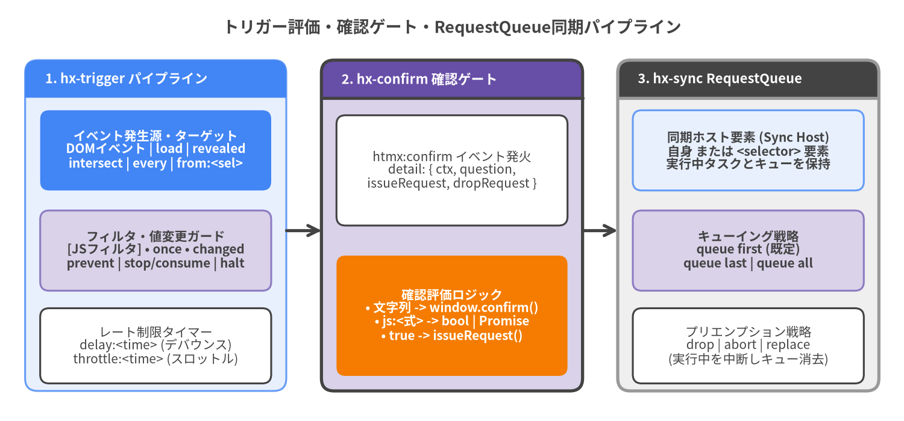

トリガーと同期属性 (Trigger & Synchronization Attributes)
トリガーと同期属性は、要素がいつHTTPリクエストを開始するか、ユーザーまたはプログラムによる確認（Confirmation）を必要とするか、そして共有スコープ上で競合する並行リクエストをどのようにキューイング・制御するかを定義します。
| シンボル | カテゴリ | デフォルト動作 | 属性継承 | 主な機能 |
|---|---|---|---|---|
hx-trigger |
イベント・タイミング指定 | submit (form), change (input/select/textarea), click (その他) |
非継承 | イベントフィルタ [expr], once, changed, delay:, throttle:, from:, target:, prevent, stop/consume, halt, capture, passive, load, revealed, intersect, every <time> |
hx-sync |
並行リクエスト同期キュー | 要素ごとの RequestQueue（未指定時は自身で queue last） |
デフォルトで継承 | [<selector>:]<strategy> (queue first, queue last, queue all, drop, abort, replace) |
hx-confirm |
実行前確認ゲート | なし（すべてのリクエスト前に htmx:confirm を発火） |
デフォルトで継承 | ネイティブ window.confirm(), js: 同期/非同期 Promise<boolean>, issueRequest() / dropRequest() によるカスタムモーダル連携 |

Source Code
from drawlib.canvas import save, setup
from drawlib.lines import line
from drawlib.shapes import rectangle
from drawlib.smartarts import Panel
from drawlib.styles import Styles
from drawlib.text import text
setup(width=180, height=84, dpi=150)
text((90, 78.5), "トリガー評価・確認ゲート・RequestQueue同期パイプライン", style=Styles.DarkBold.patch(text_size=13.0))
# Stage 1: Trigger Spec
p1 = Panel(
"1. hx-trigger パイプライン",
style=Styles.PrimaryNeutral,
header_style=Styles.PrimaryFlat,
text_style=Styles.WhiteBold.patch(text_size=10.5),
header_height=7.5,
)
p1.draw((5, 6), width=52, height=66, align="bottom_left")
rectangle((31, 54), width=46, height=16, style=Styles.PrimaryFlat.patch(shape_r=1.8), text="イベント発生源・ターゲット\nDOMイベント | load | revealed\nintersect | every | from:<sel>", text_style=Styles.WhiteBold.patch(text_size=10.0))
rectangle((31, 34), width=46, height=16, style=Styles.SecondaryNeutral.patch(shape_r=1.8), text="フィルタ・値変更ガード\n[JSフィルタ] • once • changed\nprevent | stop/consume | halt", text_style=Styles.DarkBold.patch(text_size=10.0))
rectangle((31, 15), width=46, height=15, style=Styles.White.patch(shape_r=1.8), text="レート制限タイマー\ndelay:<time> (デバウンス)\nthrottle:<time> (スロットル)", text_style=Styles.Dark.patch(text_size=10.0))
# Stage 2: Confirmation Gate
p2 = Panel(
"2. hx-confirm 確認ゲート",
style=Styles.SecondaryNeutral,
header_style=Styles.SecondaryBold,
text_style=Styles.WhiteBold.patch(text_size=10.5),
header_height=7.5,
)
p2.draw((64, 6), width=52, height=66, align="bottom_left")
rectangle((90, 50), width=46, height=22, style=Styles.White.patch(shape_r=1.8), text="htmx:confirm イベント発火\ndetail: { ctx, question,\nissueRequest, dropRequest }", text_style=Styles.Dark.patch(text_size=10.0))
rectangle((90, 21), width=46, height=24, style=Styles.AccentFlat.patch(shape_r=1.8), text="確認評価ロジック\n• 文字列 -> window.confirm()\n• js:<式> -> bool | Promise\n• true -> issueRequest()", text_style=Styles.WhiteBold.patch(text_size=10.0))
# Stage 3: RequestQueue Sync
p3 = Panel(
"3. hx-sync RequestQueue",
style=Styles.Neutral,
header_style=Styles.DarkBold,
text_style=Styles.WhiteBold.patch(text_size=10.5),
header_height=7.5,
)
p3.draw((123, 6), width=52, height=66, align="bottom_left")
rectangle((149, 54), width=46, height=16, style=Styles.PrimaryNeutral.patch(shape_r=1.8), text="同期ホスト要素 (Sync Host)\n自身 または <selector> 要素\n実行中タスクとキューを保持", text_style=Styles.DarkBold.patch(text_size=10.0))
rectangle((149, 34), width=46, height=16, style=Styles.SecondaryNeutral.patch(shape_r=1.8), text="キューイング戦略\nqueue first (既定)\nqueue last | queue all", text_style=Styles.DarkBold.patch(text_size=10.0))
rectangle((149, 15), width=46, height=15, style=Styles.White.patch(shape_r=1.8), text="プリエンプション戦略\ndrop | abort | replace\n(実行中を中断しキュー消去)", text_style=Styles.Dark.patch(text_size=10.0))
# Flow arrows
line((57, 38), (64, 38), arrow_head="->", style=Styles.DarkBold)
line((116, 38), (123, 38), arrow_head="->", style=Styles.DarkBold)
save()
イベントトリガー指定 (Event Trigger Specification)#
hx-trigger#
要素が設定されたhtmxリクエストを発行するきっかけとなる1つ以上のDOMイベント、ライフサイクルトリガー、またはポーリング間隔を指定します。複数のトリガー指定はカンマ（,）で区切って記述できます。
構文 (Syntax)
<element hx-trigger="<event>[<filter>] [modifiers...], ..."></element>
デフォルトトリガー (Natural Default Triggers)
hx-trigger が省略された場合、htmx v4.0.1は要素のタグ名と type 属性に基づいて自然なデフォルトイベントを選択します。
| 要素セレクタ | デフォルトのトリガーイベント |
|---|---|
form |
submit |
input:not([type=button]):not([type=submit]), select, textarea |
change |
その他すべての要素（button, a, div, input[type=button] など） |
click |
トリガー修飾子・フィルタ一覧 (Trigger Modifiers & Filters)
| 修飾子 / 構文 | カテゴリ | htmx v4.0.1 における説明と動作 |
|---|---|---|
[<expr>] |
フィルタ | トリガーされた Event と Element のスコープ内で評価される真偽値JavaScript式（例: keyup[key=='Enter' && ctrlKey]）。真（truthy）の場合のみリクエストが進行します。 |
once |
ライフサイクル | トリガーが最大1回のみ発火するように制限します。通常のDOMイベントでは addEventListener に { once: true } を渡します。 |
changed |
値変更ガード | 前回トリガーされたリクエスト以降に要素の値が変化した場合のみ発火します。チェックボックス/ラジオボタンでは .checked を比較し、その他の入力要素では前回の .value を elt._htmx_state.changedValues に記録して比較します。 |
delay:<time> |
レート制限 | トリガーを <time>（ms, s, m）だけ**デバウンス（Debounce）**します。<time> 経過前に再度イベントが発生するとタイマーがリセットされます。 |
throttle:<time> |
レート制限 | トリガーを <time>（ms, s, m）間隔で**スロットル（Throttle）**します。最初のイベントで即座に発火し、クールダウン期間中に到着した最新イベントを1件保持して期間終了時に発火します。 |
from:<selector> |
イベント委譲 | <selector>（document, window, body, host, this, self, outside, closest <sel>, find <sel>, findAll <sel>, next [sel], previous [sel], global <sel>）で解決された外部ノード上でイベントを監視します。from:outside を指定すると要素外でのイベント発生時にトリガーされます。 |
target:<selector> |
フィルタ | event.target が指定したCSS <selector> に一致する場合にのみトリガーを制限します。 |
prevent |
イベント制御 | トリガー一致時に evt.preventDefault() を呼び出します。 |
stop / consume |
イベント制御 | トリガー一致時に evt.stopPropagation() を呼び出します（consume は stop のエイリアスです）。 |
halt |
イベント制御 | prevent stop のショートハンドです（evt.preventDefault() と evt.stopPropagation() の両方を呼び出します）。 |
capture |
リスナー設定 | 内部の addEventListener を { capture: true } で登録します。 |
passive |
リスナー設定 | 内部の addEventListener を { passive: true } で登録します。 |
特殊・オブザーバートリガー (Special Synthetic & Observer Triggers)
| トリガー名 | オプション / 修飾子 | htmx v4.0.1 における説明と動作 |
|---|---|---|
load |
delay:<time> |
要素がDOM内でhtmxによって初期化された直後に発火します（delay:<time> で遅延可能）。 |
revealed |
標準修飾子 | IntersectionObserver（threshold: 0）を使用し、要素がビューポート内に入った瞬間に1回トリガーして監視を解除（disconnect）します。 |
intersect |
once, root:<sel>, rootMargin:<margin>, threshold:<0.0-1.0> |
IntersectionObserver を使用し、指定された root、rootMargin、threshold の条件で要素が交差するたびにトリガーします。 |
every <time> |
[<filter>] |
elt.isConnected が true である間、setInterval を用いて <time>（500ms, 2s, 1m）ごとにエンドポイントを繰り返しポーリングします。every 2s [document.hasFocus()] のような条件付きポーリングフィルタもサポートします。 |
使用例 (Usage Examples)
<!-- 1. 値変更ガード・デバウンス・キーボードショートカットを組み合わせたライブ検索 -->
<input type="search"
name="q"
hx-get="/api/search"
hx-trigger="input changed delay:250ms, search, keyup[key=='/' && ctrlKey] from:document"
hx-target="#results">
<!-- 2. revealed を使用した無限スクロールのセンチネル要素 -->
<div hx-get="/api/feed?page=2"
hx-trigger="revealed"
hx-swap="outerHTML">
次のアイテムを読み込み中...
</div>
<!-- 3. threshold 指定付きの IntersectionObserver によるインプレッション計測 -->
<section hx-post="/api/analytics/impression"
hx-trigger="intersect once threshold:0.5"
hx-swap="none">
プロモーションコンテンツ
</section>
<!-- 4. タブが表示状態のときのみ5秒ごとにポーリング -->
<div hx-get="/api/jobs/status"
hx-trigger="every 5s [document.visibilityState === 'visible']"
hx-swap="innerMorph">
ジョブ進行状況を確認中...
</div>
リクエストキューと並行同期制御 (Request Queue & Concurrency Synchronization)#
hx-sync#
単一要素、または共有される祖先・要素グループ（<form> とその内部の <input> 群など）の間で競合する並行リクエストを調整します。内部的には、htmx v4.0.1は解決された同期ターゲット要素（elt._htmx_state.queue）に RequestQueue インスタンスをアタッチします。
構文 (Syntax)
<element hx-sync="[<selector>:]<strategy>"></element>
<selector>:を省略した場合、同期スコープは要素自身（this）になります。- コロンや戦略を省略して
<selector>のみを指定した場合（例:hx-sync="closest form"）、戦略はデフォルトでqueue firstになります。 hx-syncはデフォルトで子孫要素へ継承されます。
同期戦略一覧 (Synchronization Strategies)
| 戦略 (Strategy) | 同期ターゲット上で既にリクエストが実行中（In-Flight）のときの動作 |
|---|---|
drop |
既存のリクエストが実行中の場合、新しくトリガーされたリクエストを破棄（無視）します。 |
abort |
リクエストを開始しますが、実行中に同じ同期ターゲットで別のリクエストがトリガーされた場合に自身を中断（abort）するコールバックを登録します。 |
replace |
現在実行中のリクエストを即座に中断（active.abort()）し、待機中のキューをすべてクリアした上で新しいリクエストを即座に開始します。 |
queue / queue first |
（デフォルト） 実行中のリクエストがある場合、最初に到着した後続リクエスト1件のみをキューに入れ、キューが空でない間に到着したさらなるリクエストは無視します。 |
queue last |
最後に到着した最新のリクエスト1件のみをキューに保持（queue = [newTask]）し、実行中のリクエスト完了後に実行します。 |
queue all |
到着したすべてのリクエストをFIFOキュー（queue.push(newTask)）に追加し、到着順に1つずつ直列実行します。 |
使用例 (Usage Examples)
<!-- 決済ボタンの二重送信を防止（実行中のクリックを破棄） -->
<button hx-post="/api/checkout/pay" hx-sync="this:drop">
支払いを確定する
</button>
<!-- オートコンプリート検索：実行中の通信を中断して最新の入力で置き換える -->
<input type="search"
name="q"
hx-get="/api/autocomplete"
hx-trigger="input changed delay:150ms"
hx-sync="this:replace"
hx-target="#suggestions">
<!-- フィールド検証とフォーム送信の連携：フォーム送信時に実行中のバリデーション通信を中断 -->
<form hx-post="/api/register" hx-sync="this:replace">
<input type="email"
name="email"
hx-post="/api/validate-email"
hx-trigger="change"
hx-sync="closest form:abort"
hx-target="next .error-msg">
<span class="error-msg"></span>
<button type="submit">アカウント作成</button>
</form>
ユーザー確認・非同期確認ゲート (User & Programmatic Confirmation)#
hx-confirm#
リクエストを発行する前に確認を求めます。htmx v4.0.1では、window.confirm() を表示する静的なテキストプロンプトだけでなく、同期的な真偽値または非同期の Promise<boolean> を返すことができる動的JavaScript式（js: または javascript:）もサポートしています。
構文 (Syntax)
<element hx-confirm="<message> | js:<boolean-or-promise-expression>"></element>
| モード / イベント詳細 | htmx v4.0.1 における仕様 |
|---|---|
| プレーンテキスト指定 | ネイティブの window.confirm(question) を呼び出します。true の場合は issueRequest() で通信を実行し、false の場合は dropRequest() でキャンセルします。 |
js: / javascript: プレフィックス |
要素のスコープ内でJavaScript式を評価します（event を参照可能）。返り値が Promise の場合は Promise.resolve(result) を待機し、解決値が truthy なら issueRequest()、falsy なら dropRequest() を呼び出します。 |
htmx:confirm イベント |
hx-confirm 属性の有無にかかわらずすべてのリクエスト直前に発火します（属性未指定時は detail.question が undefined）。リスナー内で event.preventDefault() を呼ぶと、event.detail.issueRequest() または event.detail.dropRequest() が呼ばれるまでリクエストが保留されます。 |
| 属性継承 | デフォルトで継承されます。 |
使用例 (Usage Examples)
<!-- 1. 標準のブラウザ確認ダイアログ -->
<button hx-delete="/api/account"
hx-confirm="本当にアカウントを完全に削除しますか？">
アカウント削除
</button>
<!-- 2. js: プレフィックスを用いた非同期 Promise 確認モーダル -->
<button hx-post="/api/deployments/production"
hx-confirm="js:MyModal.confirm({ title: '本番環境へデプロイしますか？', danger: true })">
今すぐデプロイ
</button>
<!-- 3. htmx:confirm イベントをグローバルにフックしてカスタム <dialog> を表示 -->
<script>
document.addEventListener("htmx:confirm", (evt) => {
const { question, issueRequest, dropRequest } = evt.detail;
if (!question) return; // hx-confirm 未設定のリクエストはそのまま通す
evt.preventDefault(); // リクエスト発行を一時停止
showCustomConfirmDialog(question).then((confirmed) => {
if (confirmed) issueRequest();
else dropRequest();
});
});
</script>